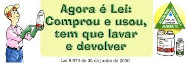
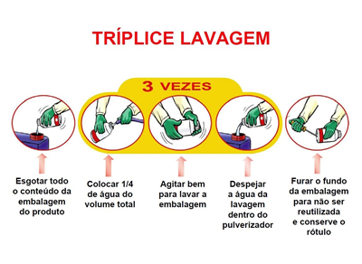

E agora? O que se deve fazer com as embalagens vazias dos defensivos químicos?
A legislação determina que as embalagens vazias sejam recolhidas a uma unidade de recebimento autorizada pelos órgãos ambientais.
De acordo com a Lei Federal nº 9.974 de 06/06/2000 e Decreto nº 4.074 de 08/01/2002, o prazo para devolução das embalagens vazias é de até 1 ano a partir da data da compra. As embalagens rígidas devem passar pelo processo da tríplice lavagem.

A tríplice lavagem trata-se da prática de efetuar a lavagem da embalagem do agrotóxico após o seu esvaziamento, realizando esse procedimento por três vezes repetidas.
Observe o procedimento abaixo:
Quando?
As embalagens vazias devem ser devolvidas juntas com suas tampas e rótulos quando o agricultor reunir uma quantidade que justifique o transporte.
O agricultor tem o prazo de até 1 ano depois de compra para devolver as embalagens vazias. Se sobrar produto na embalagem, poderá devolvê-la até 6 meses após o vencimento.
Onde?
O agricultor deve devolver as embalagens vazias na unidade de recebimento indicada pelo Revendedor no corpo da Nota Fiscal.

DICA: Tire suas duvidas sob a tríplice lavagem assistindo o vídeo disponível em: http://www.sestr.com.br/2012/03/triplice-lavagem-de-embalagens-de.html
O que se deve fazer para corrigir a acidez do solo?
Para a correção da acidez do solo utiliza-se o calcário.
E a prática de manejo que se utiliza o calcário chama-se calagem.
Participe do fórum onde debateremos o seguinte tema “como alimentar uma população em constante crescimento sem contaminar o meio ambiente”.
Responsáveis: Prof. Katiane Arrais Jales, Prof. Maria Cristina Martins Ribeiro de Souza
Universidade Federal do Ceará - Instituto UFC Virtual